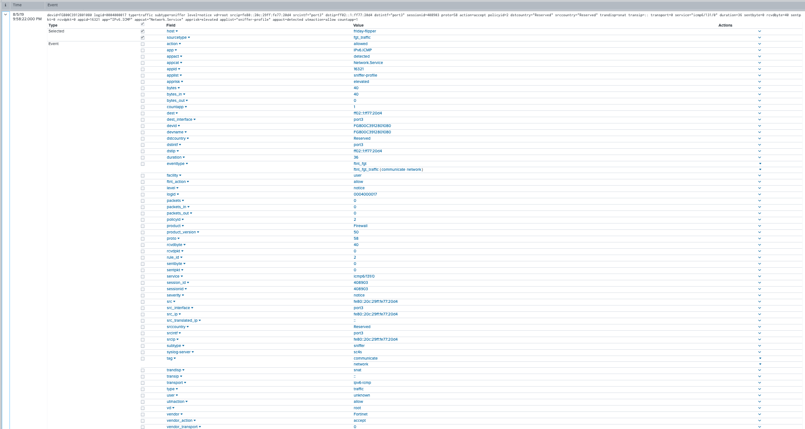

Vendor - Fortinet¶
There are two Fortinet device flavors (FortiOS and Fortiweb) that are supported by a single log path in SC4S. Therefore, both Fortinet variants use “FORTINET” as the core of the unique port and archive environment variable settings (rather than a unique one per product), as the Fortinet log path handles either variant sending events to SC4S. Therefore, the FORTINET environment variables for unique port, archive, etc. should be set only once, regardless of how many unique ports or Fortinet appliance variants are in use.
If your deployment has multiple Fortinet devices that send to more than one port, set the FORTINET unique port variable(s) to just one of the ports in use. Then, map the others with container networking to the port chosen, similar to the way default ports are configured (see the “Getting Started” runtime documents for more details).
Example: If you have three Fortinet devices, sending on TCP ports 2000,2001, and 2002, set
SC4S_LISTEN_FORTINET_TCP_PORT=2000. Then, change the unit/compose files to route the three external
ports to the single port 2000 on the container. Here is the example for podman/systemd:
ExecStart=/usr/bin/podman -p 514:514 -p 514:514/udp -p 6514:6514 -p 2000-2002:2000 \or this, for docker-compose/swarm installations:
# Comment the following line out if using docker-compose
mode: host
- target: 2000
published: 2000-2002
protocol: tcp These changes will route all three ports to TCP port 2000 inside the container, and the single Fortinet log path will properly process data from all three devices.
The source documentation included below includes settings for both appliance types (FortiOS and Fortigate) supported by SC4S.
Product - Fortigate¶
| Ref | Link |
|---|---|
| Splunk Add-on | https://splunkbase.splunk.com/app/2846/ |
| Product Manual | https://docs.fortinet.com/product/fortigate/6.2 |
Sourcetypes¶
| sourcetype | notes |
|---|---|
| fgt_log | Catch-all sourcetype; not used by the TA |
| fgt_traffic | None |
| fgt_utm | None |
| fgt_event | None |
Sourcetype and Index Configuration¶
| key | sourcetype | index | notes |
|---|---|---|---|
| fortinet_fortios_traffic | fgt_traffic | netfw | none |
| fortinet_fortios_utm | fgt_utm | netids | none |
| fortinet_fortios_event | fgt_event | netops | none |
| fortinet_fortios_log | fgt_log | netops | none |
Filter type¶
MSG Parse: This filter parses message content
Setup and Configuration¶
- Install the Splunk Add-on on the search head(s) for the user communities interested in this data source. If SC4S is exclusively used the addon is not required on the indexer.
- Review and update the splunk_index.csv file and set the index and sourcetype as required for the data source.
- Refer to the admin manual for specific details of configuration to send Reliable syslog using RFC 3195 format, a typical logging configuration will include the following features.
config log memory filter
set forward-traffic enable
set local-traffic enable
set sniffer-traffic disable
set anomaly enable
set voip disable
set multicast-traffic enable
set dns enable
end
config system global
set cli-audit-log enable
end
config log setting
set neighbor-event enable
endOptions¶
- NOTE: Remember to set the variable(s) below only once, regardless of how many unique ports and/or Fortinet device types are in use. See the introductory note above for more details.
| Variable | default | description |
|---|---|---|
| SC4S_LISTEN_FORTINET_TCP_PORT | empty string | Enable a UDP port for this specific vendor product using the number defined |
| SC4S_LISTEN_FORTINET_UDP_PORT | empty string | Enable a UDP port for this specific vendor product using the number defined |
| SC4S_ARCHIVE_FORTINET | no | Enable archive to disk for this specific source |
| SC4S_DEST_FORTINET_HEC | no | When Splunk HEC is disabled globally set to yes to enable this specific source |
Verification¶
An active firewall will generate frequent events, in addition fortigate has the ability to test logging functionality using a built in command
diag log testVerify timestamp, and host values match as expected
index=<asconfigured> (sourcetype=fgt_log OR sourcetype=fgt_traffic OR sourcetype=fgt_utm)UTM Message type¶

Traffic Message Type¶

Event Message Type¶

Verify timestamp, and host values match as expected
Product - FortiWeb¶
| Ref | Link |
|---|---|
| Splunk Add-on | https://splunkbase.splunk.com/app/4679/ |
| Product Manual | https://docs.fortinet.com/product/fortiweb/6.3 |
Sourcetypes¶
| sourcetype | notes |
|---|---|
| fgt_log | Catch-all sourcetype; not used by the TA |
| fwb_traffic | None |
| fwb_attack | None |
| fwb_event | None |
Sourcetype and Index Configuration¶
| key | sourcetype | index | notes |
|---|---|---|---|
| fortinet_fortiweb_traffic | fwb_traffic | netfw | none |
| fortinet_fortiweb_attack | fwb_attack | netids | none |
| fortinet_fortiweb_event | fwb_event | netops | none |
| fortinet_fortiweb_log | fwb_log | netops | none |
Filter type¶
MSG Parse: This filter parses message content
Setup and Configuration¶
- Install the Splunk Add-on on the search head(s) for the user communities interested in this data source. If SC4S is exclusively used the addon is not required on the indexer.
- Review and update the splunk_index.csv file and set the index and sourcetype as required for the data source.
- Refer to the admin manual for specific details of configuration to send Reliable syslog using RFC 3195 format, a typical logging configuration will include the following features.
config log syslog-policy
edit splunk
config syslog-server-list
edit 1
set server x.x.x.x
set port 514 (Example. Should be the same as default or dedicated port selected for sc4s)
end
end
config log syslogd
set policy splunk
set status enable
endOptions¶
- NOTE: Remember to set the variable(s) below only once, regardless of how many unique ports and/or Fortinet device types are in use. See the introductory note above for more details.
| Variable | default | description |
|---|---|---|
| SC4S_LISTEN_FORTINET_TCP_PORT | empty string | Enable a UDP port for this specific vendor product using the number defined |
| SC4S_LISTEN_FORTINET_UDP_PORT | empty string | Enable a UDP port for this specific vendor product using the number defined |
| SC4S_ARCHIVE_FORTINET | no | Enable archive to disk for this specific source |
| SC4S_DEST_FORTINET_HEC | no | When Splunk HEC is disabled globally set to yes to enable this specific source |
Verification¶
An active firewall will generate frequent events, in addition fortigate has the ability to test logging functionality using a built in command
diag log testVerify timestamp, and host values match as expected
index=<asconfigured> (sourcetype=fwb_log OR sourcetype=fwb_traffic OR sourcetype=fwb_attack OR sourcetype=fwb_event)Verify timestamp, and host values match as expected